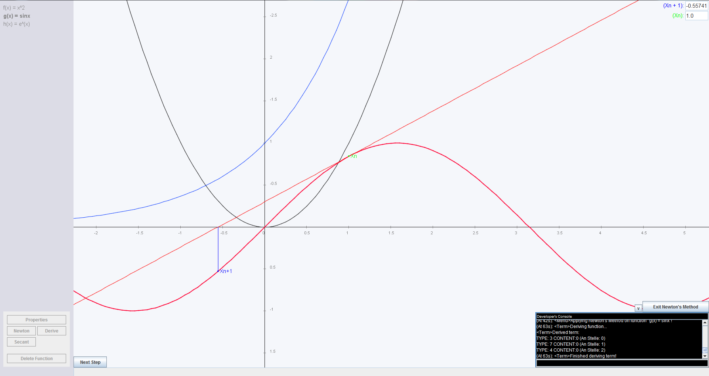
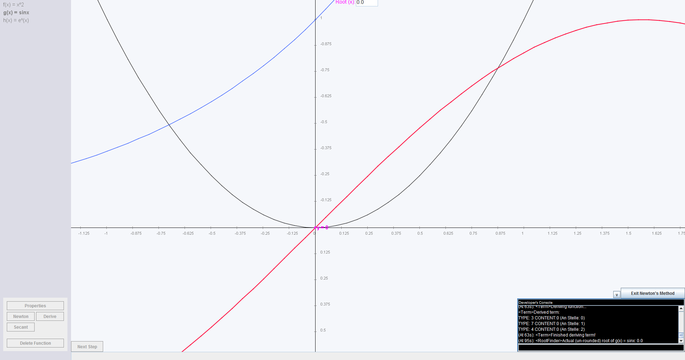
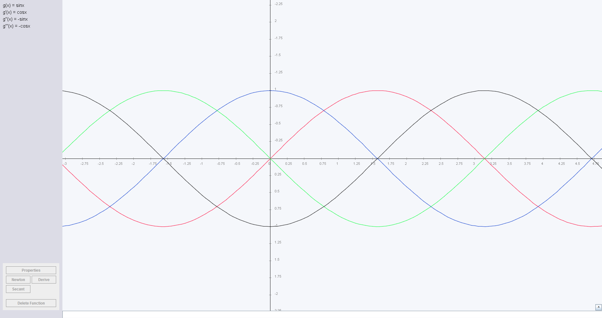
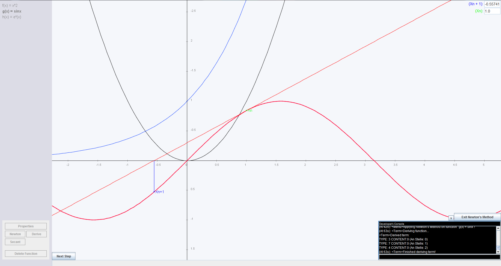
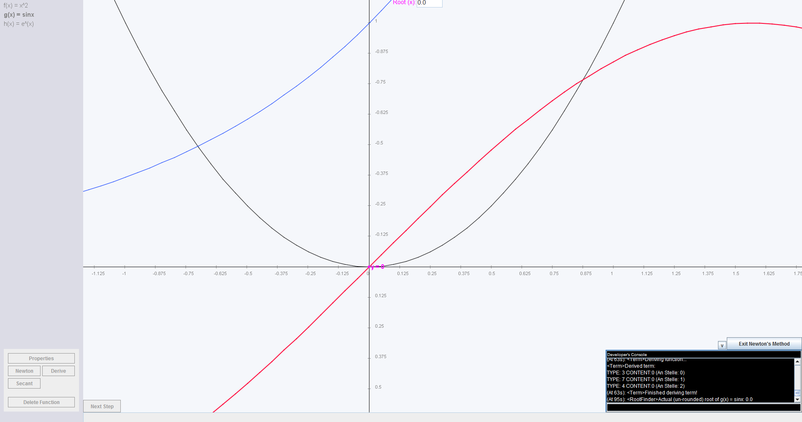
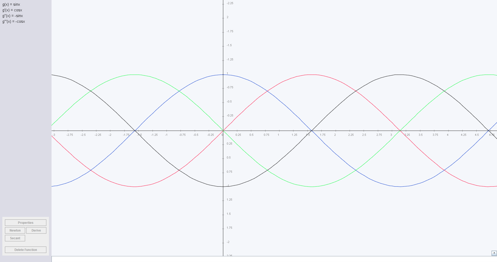

Zeichnen mathematischer Funktionen
Dies ist eines meiner ältesten Projekte. Ich habe es während meiner Maturazeit geschrieben und es schlussendlich auch für meine mündliche Matura in Mathematik verwendet.
 ">
">
">
">
">
">
Beschreibung
Diese Software ermöglicht es die Graphen benutzerdefinierter mathematischer Funktionen zu zeichnen. Die vom Benutzer eingegebene Funktion wird durch einen eigens geschriebenen Algorithmus analysiert, damit das Programm jeden beliebigen Funktionswert selbst berechnen kann. Funktionswerte werden dann mit einer gewissen Abtastrate berechnet und so der Graph approximiert.
Die gezeichneten Funktionen können mit der Maus selektiert, transformiert und skaliert werden.
Des Weiteren habe ich eine "Newton" und eine "Secant" Programmfunktion geschrieben, welche den Arbeitsablauf des Newton- bzw. Sekantenverfahrens zur Nullstellenermittlung von Funktionen visualisieren soll. Da das Newtonverfahren die Ableitungsfunktion verwendet habe ich auch einen Ableitungsalgorithmus entwickelt, welcher in der Lage ist "einfache" Funktionen abzuleiten. Dieser Algorithmus beherrscht auch die Produkt- sowie Quotientenregel.
Das Programm ist in der Lage einfache Funktionen wie "f(x)=x^2" aber auch komplexere wie "f(x)=sin(x)" oder "f(x)=e^x" zu zeichnen und abzuleiten.
Entwicklungszeit:
Ende 2013 - Anfang 2014